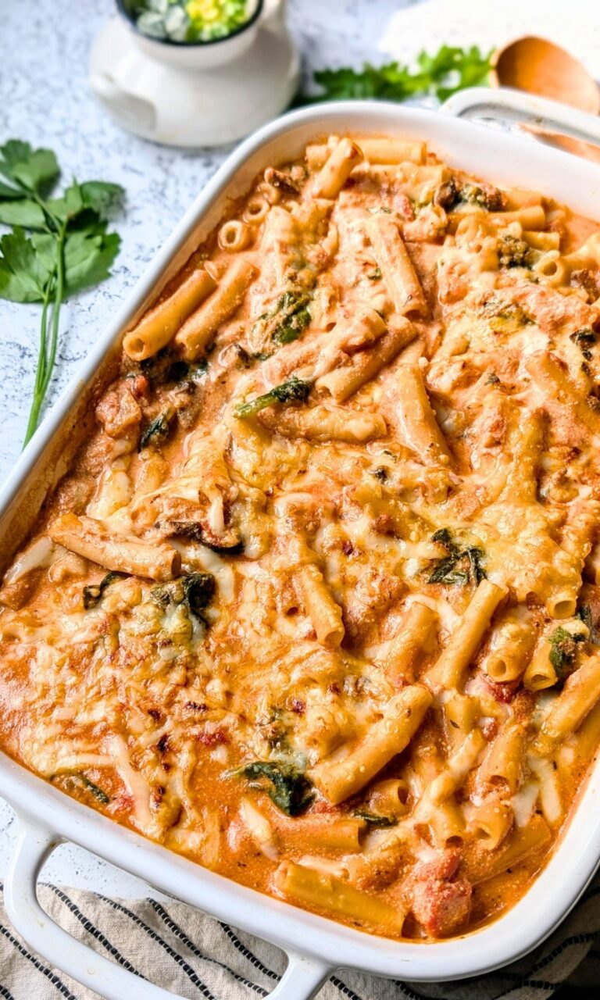

Home
Pasta Bake

Description
Yummy, easy, delicious. My favorite ingredients. This recipe will also be low-sodium :3
Ingredients
- 1 box of Ziti or Penne
- Fresh Mozzarella
- Extra Virgin Olive Oil
- Onion
- Jarlic
- Egg
- No Salt Added Tomato Sauce
Steps
- Preheat the oven to 350 degrees Fahrenheit.
- Bring a large pot of water to a boil, cook the ziti al dente according to package directions. Drain, rinse under cold water, and set aside.
- In another pot, heat the olive oil over low heat. Add the jarlic and onion and sauté for 6 to 7 minutes until veggies have softened. Add the tomato sauce and simmer ingredients together..
- In a large bowl combine the low salt ricotta, parsley, spinach, and egg. Mix together well so all the vegetables and cheese have combined.
- In a deep 13×9 inch baking dish, layer 1 cup tomato sauce, half of the pasta, half of the cheese/vegetable mixture. Repeat again with another layer of sauce, pasta, and cheese. Sauce one more time for the final layer, and sprinkle the fresh mozzarella on top.
- Bake for 30 minutes covered, and an additional 20 minutes uncovered until pasta and cheese becomes hot and bubbly.